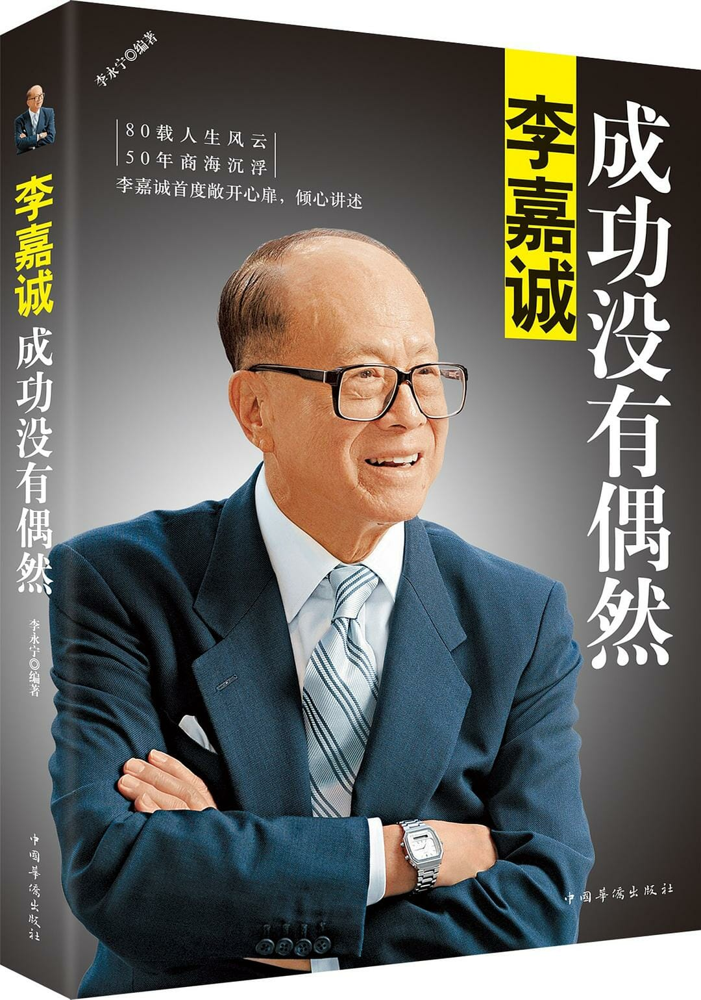

注：【】部分为笔者心得，非原文摘抄。
- 全力以赴是经营企业的基础。
- 要让员工与自己一同为企业付出百分之百的努力和热情，就要懂得善待员工，不能觉得他们只是自己花钱雇来的。
- 做老板，不但自己要勤奋，还要有脑子，懂得员工的心理，调动企业上下人员，共同为企业开创美好未来。
- 有不寻常的事发生时，立即想到赚钱，这是生意人应该具备的素质。
- 做生意有三种方式：一是创新、二是改进、三是跟风。
- 创造市场影响力是增加销售非常有效的途径。
- 商人一定要不断寻找新的或者未经开发的市场。
- 生意不是等来的，而是要靠敏锐的目光去发现。
- 比知识重要的是思维，比思维重要的是悟性。
- 士人第一要有志，第二要有识，第三要有恒。有志则断不甘为下流，有识则知学问无尽，有恒则断无不成之事。
- 任何时候都要在稳健中求发展，发展中保稳健。企业的管理很重要，高水平的管理才能带来高效益。
- 一个商人到底有没有前途，取决于他的开拓意识和远大眼光。
- 精神来自兴趣，对工作有兴趣就不会累。
- 生意的大门总是想有心人敞开的。如果在竞争中，你输了，那么你输在时间；反之，你赢了，也赢在时间。
- 当事业稍有起色时，不能自满，要勇于寻求新的发展，这才是生意长远之道。
- 在合作中主动出击很重要。
- 永远走在对手前面，才能一直保持不败的地位。
- 不愿改变的人只能等待运气，懂得掌握时机的人便能创造机会。
- 成功没有绝对方程式，但失败都有定律，减低一切失败的因素就是成功的基石。
- 同类企业之间的竞争就是产品质量的竞争。
- 人生就是在一点一点的改错中成长，重视自己犯下的每一个错误，在悔悟中成长；原谅他人的过错，为自己的修养加一个筹码。
- 未攻之前，一定要先守，每一个政策实施之前都必须做到这一点。
- 在企业扩张的时候，一定不能过分贪心，很多被淘汰的企业都是盲目扩张造成的。
- 做生意最怕自满。
- 克服贪婪不是固守原地不发展，保持合适的发展速度对于一个企业来说是必要的，也是企业做大的重要路子。合适的发展速度是适度的投资，是对行业情况和企业自身情况熟知的前提下的决策，要规模，更要发展。
- 毅力是一种心态而不是一种生活。
- 管理人员对会计知识的把持和尊重，对现金流的控制，对公司预算的掌握是最基本的元素。
- 好的管理艺术在于将新事、新思维与传统中和更新的能力。
- 企业的核心责任是追求效率及盈利，尽量扩大自己的资产价值。
- 讲究仪容整齐清洁是自律的表现。
- 商业架构的灵活制度要建基于实事求是，能有自我修正挽回的机制（Check and Balance）。
- 了解细节，经常能预防危机的发生。
- 以身作则的目的，就是通过管理者的示范作用，让其他员工完全遵从公司的规章制度。
- 自我管理是一名管理者让属下信服、成大事的基本因素。
- 企业家要尽可能少地把精力和时间花费在交流上，要用更多的时间来培养自己学习、研究、判断的能力，这是决定竞争优势的东西。
- 一名优秀的经理，最重要的一点就是懂得授权和放权。——山姆·沃尔顿
- 下君尽己之能，中君尽人之力，上君尽人之智。——韩非子
- 以人为本不是前提，而是结果。员工通过辛勤的劳动获得合理的报酬，和家人能过上幸福的生活，这才是最大的以人为本。
- 一个能够从细微处体谅和善待他人的人，一定是一个与人为善的人，必定有很好的人缘关系，这种人缘关系就是他成功的基石。——《关爱人》戴尔·卡耐基
- 要建立同心协力的团队，第一条法则就是能聆听得到沉默的声音。
- 企业管理的关键在于人性化，只有通过和员工有效的沟通，互相有了深层次的了解和理解，企业组织才能更有效地发挥作用。
- 创造一个开放、合作、信任的工作环境，重视与全体员工分享信息，不仅可以留住杰出的员工，还可以吸引更多优秀的人才加入。
- 伟大的事业需要一颗真诚的心与人沟通。——松下幸之助
- 优秀的团队必定是沟通良好、协调一致的团队。
- 【每个人都有义务维护彼此的尊严。】
- 一个人会犯（非原则性）错误，就意味着他不是一个循规蹈矩、安于现状的人，而是一个具有开拓创新、积极进取精神的人。
- 放手去做好你认为对的事，即使犯了错误，也可以从中得到经验教训，不再犯同样的错误。——盛田昭夫
- 如果管理者不给予员工犯错的机会，总是想着一手牵着走，或是沉溺于批评、抱怨当中，不管什么铁也终究成不了钢。
- 要成为一位成功的领导者，不单要努力，更要听取别人的意见，要有忍耐力，提出自己的意见前，更要考虑别人的意见，最重要的是创造出新颖的意念。
- 成功的管理者不会一味地显露自己的才华，而是善于倾听别人的意见，借别人的智慧来赚钱。
- 成功的管理者都应是伯乐，伯乐的责任不仅在于甄选、延揽“比他更聪明的人才”，更在于绝对不能挑选名气大却妄自标榜的企业明星。
- 人才是经营公司的一等任务。在用人方面，怎样对待人才，是管理者领导能力和驾驭能力的高度体现。——杰克·韦尔奇
- 用人上一加一不等于二，搞不好等于零。——皮尔·卡丹
- 任人唯亲是中国传统家族式管理的习惯做法，这无疑是表示对外来员工不信任，必然会打击他们工作的积极性。
- 能否做到知人善任、任人唯贤，是检验企业管理者胸怀和智慧的重要标准。
- 要有同理心、能易地而处、张开心胸去体会来自世界各地不同种族间人们的所思所想，才可以超越种族、性别、年龄、文化及其它隔膜。
- 成就事业最关键的是要有人帮助你、乐意跟你工作。
- 作为企业领导，维护团队建设首先要做的就是怀有一颗包容开放的心，能够接纳不同的员工，尤其是能力超群的。
- 有钱大家赚、利润大家分享，这样才有人愿意合作。
- 商业合作三大前提：一是双方必须有可以合作的利益；二是必须有可以合作的意愿；三是双方必须有共享共荣的打算。
- 合作是解救人类的唯一途径。——罗素
- 能否抓住时机，和企业发展的步伐有重大关联。
- 抓住时机的重要因素是知己知彼。
- 知识的最大作用是可以磨砺眼光、增强判断力。
- 商业的成功，取决于做人的成功。做生意的人都精明能干，可是并不是每个人都能成功，关键在于，你得靠自己踏实的做人之道赢得别人的信任，让别人愿意和你达成交易。
- 不要局限于一项业务，目光所及之处都可能存在着商机，应该做好准备，抓住每一个商机。在市场不景气的时候，经营多种业务，还可以分摊风险、共渡难关。
- 投资能力的关键就是找准市场投资的最佳切入点。
- 谁不思考未来，谁就没有未来。
- 最失败的投资方式就是跟风。
- 如果你不过分显示自己，就不会招惹对手的敌意，别人也就无法捕捉到你的虚实。
- 一个人如果能够在创业之初保持一颗谦虚的心，就能够让人们快速地接纳他，帮助他赢得更多的机会。当他获得一些成就之后，还能保持一颗谦虚的心，那么他的事业就会蒸蒸日上。
- 过分卖弄自我的人，只会让自己显得更加可怜。
- 不要以为明天一定就和今天一样，唯一的保障来自自己。
- 能够正确对待金钱的人，才能做到事业有成。
- 必须给合作伙伴留足够的利润空间。
- 合伙人之间是一种相互补充、相互扶持的关系，只有充分发挥每一方的优势，才能为彼此都带来利益。
- 要取得别人的信任，就必须做到重承诺。在做出每一个承诺之前，必须经过详细的审查和考虑。一经承诺，便要负责到底。
- 人以自利为出发点对社会的贡献，要比意图改善社会的人的贡献大。——《国富论》亚当·斯密
- 能够在这个世上对其他需要你帮助的人有所贡献，便是内心真正的财富。